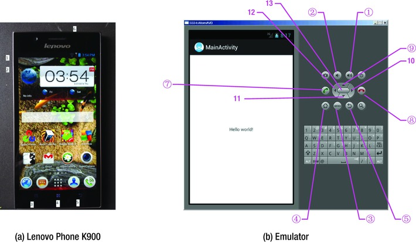
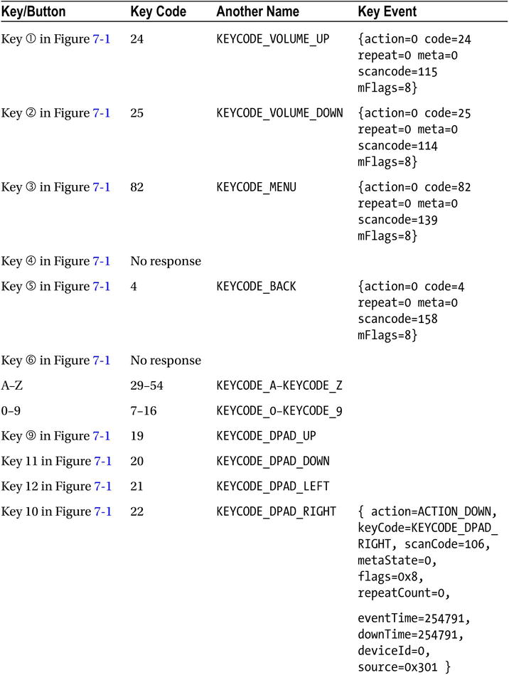
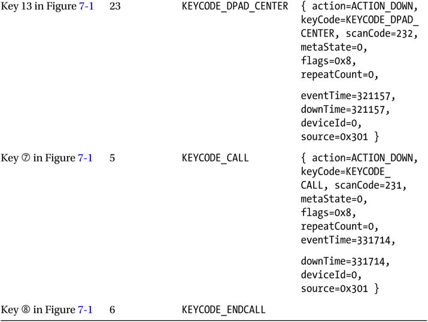
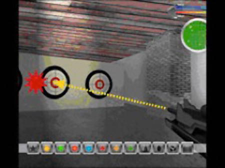
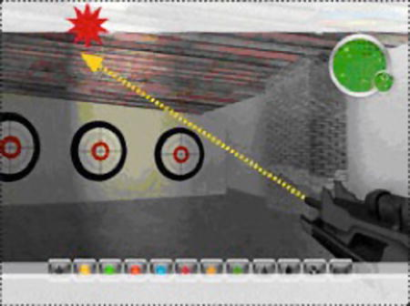
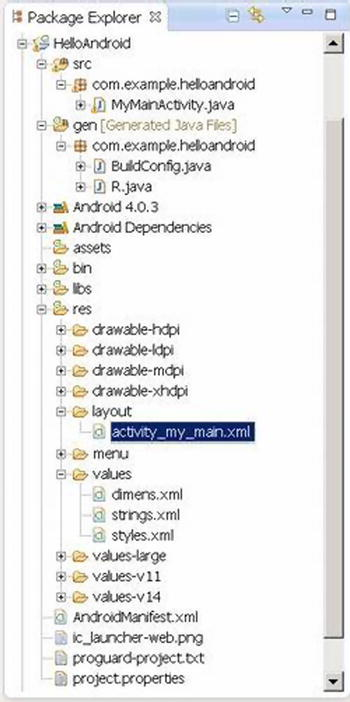
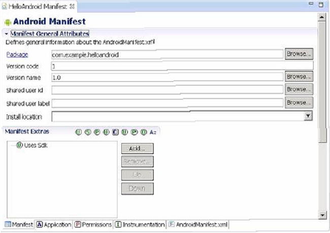
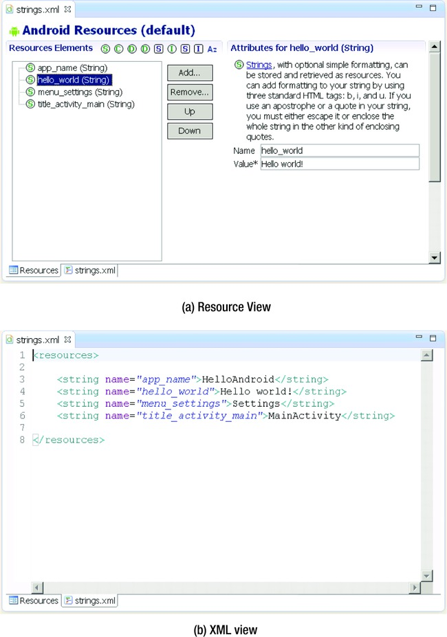
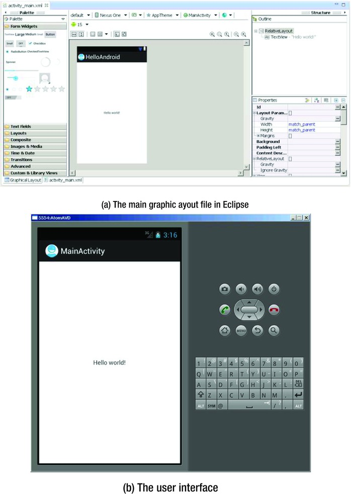
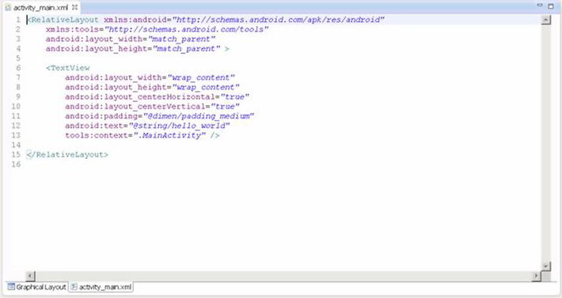

Since its emergence in the 1980s, the concept of the graphical user interface (GUI) has become an indispensable part of human-computer interaction (HCI). As embedded systems have evolved, they have gradually adopted this concept as well. The Android embedded OS running on the Intel Atom hardware platform is at the forefront of this movement.
Because resources are limited, the GUI design of Android systems is more challenging than that of desktop systems. In addition, users have more rigorous demands and expectations for a high-quality user experience. Interface design has become one of the important factors in determining the success of systems and applications on the market. This chapter introduces how to develop user interfaces suitable for typical user interaction on Android embedded systems.
Overview of GUIs for Embedded Applications
These days, the user interface (UI) and user experience (UX) of software are increasingly important factors in determining whether software will be accepted by users and achieve market success. UX designs are based on the types of input/output or interaction devices and must comply with their characteristics. Compared to desktop computer systems, Android systems have different interaction devices and modalities. If a desktop’s UI designs are copied indiscriminately, an Android device will present a terrible UI and unbearable UX, unacceptable to users. In addition, with greater expectations for compelling user experiences, developers must be more meticulous and careful in designing system UIs and UXs, making them comply with the characteristics of embedded applications.
This chapter first introduces the general GUI design method for desktop systems and then shows how designing UIs for embedded systems is different. The aim is to help you quickly master general methods and principles of GUI design for Android applications.
Characteristics of Interaction Modalities of Android Devices
A general-purpose desktop computer has powerful input/output (or interaction) devices such as a large, high-resolution screen, a full keyboard and mouse, and diverse interaction modalities. Typical desktop computer screens are at least 17 inches, with resolutions of at least 1,280 × 960 pixels. The keyboard is generally a full keyboard or an enhanced keyboard. On full keyboards, letters, numbers, and other characters are located on corresponding keys—that is, full keyboards provide keys corresponding to all characters. Enhanced keyboards have additional keys. The distance between keys on a full keyboard is about 19 mm, which is convenient for users to make selections.
The GUI interactive mode of desktop computers based on screen, keyboard, and mouse is referred to as WIMP (windows, icons, menus, and pointers), which is a style of GUI using these elements as well as interactive elements including buttons, toolbars, and dialog boxes. WIMP depends on screen, keyboard, and mouse devices to complete the interaction. For example, a mouse (or a device similar to a mouse, such as a light pen) is used for pointing, a keyboard is used to input characters, and a screen shows the output.
In addition to screens, keyboards, mice, and other standard interaction hardware, desktop computers can be equipped with joysticks, helmets, data gloves, and other multimedia interactive devices to achieve multimedia computing functions. By installing cameras, microphones, speakers, and other devices, and by virtue of their powerful computing capabilities, users can interact with desktop computers in the form of voice, gestures, facial expressions, and other modalities.
Desktop computers are also generally equipped with CD-ROM/DVDs and other large-capacity portable external storage devices. With these external storage devices, desktop computers can release software and verify ownership and certificates through CD/DVD.
As a result of the embeddability and limited resources of embedded systems, as well as user demand for portability and mobility, Android systems have interaction modalities, methods, and capabilities that are distinct from those of desktop systems. Due to these characteristics and conditions, interaction on Android systems is more demanding and more difficult to achieve than it is on desktop systems.
The main differences between Android devices and desktop computers are described next.
Screens of Various Sizes, Densities, and Specifications
Instead of large, high-resolution screens like those on desktop computers, Android device screens are smaller and have various dimensions and densities measured in dots per inch (DPI). For example, the K900 smartphone’s screen is 5.5 inches with a resolution of 1920 ×1080 pixels, and some smartphone screens are only 3.2 inches.
The aspect ratio of Android device screens is not the conventional aspect ration of 16:9 or 4:3 used by desktop computers. If Android devices adopted the interaction mode of desktop computers, many problems would result, such as a blurry display and errors in selecting targets.
Keypads and Special Keys
Desktop computers have full keyboards, where a key corresponds to every character and the generous distance between keys makes typing convenient. If an Android device has a keyboard, it’s usually a keypad instead of the full keyboard. Keypads have fewer keys than full keyboards; several characters generally share one key. A keypad’s keys are smaller and more tightly spaced than on full keyboards, making it harder to select and type characters. As a result, keypads are less convenient to use than full keyboards. In addition, some keypads provide special keys that are not found on standard full keyboards, so users must adjust their input on the Android device.
Generally speaking, on Android devices, keys and buttons are a unified concept. Whether you press a button or a key, the action is processed as a keyboard event with a uniform numbering scheme. Keyboard events in Android have corresponding android.view.KeyEvent classes. Figure 7-1’s button/key callouts correspond to the event information listed in Table 7-1.

Figure 7-1.
Keyboard and buttons of an Android phone
See help documents like that for android.view.KeyEvent for details. Table 7-1’s contents are excerpts.
Table 7-1.
Android Event Information Corresponding to Key and Button Events

Touch Screens and Styluses, in Place of Mice
A touch screen is an input device covering a display device to record touch positions. By using the touch screen, users can have a more intuitive reaction to the information displayed. Touch screens are widely applied to Android devices and replace a mouse for user input. The most common types of touch screens are resistive touch screens, capacitive touch screens, surface acoustic wave touch screens, and infrared touch screens, with resistive and capacitive touch screens being most often applied to Android devices. Users can directly click videos and images on the screen to watch them.
A stylus can be used to perform functions similar to touch. Some styluses are auxiliary tools for touch screens and replace fingers, helping users complete elaborate pointing, selecting, line drawing, and other operations, especially when the touch screen is small. Other styluses implement touch and input functions along with other system components. With the first type of auxiliary tool styluses, users can touch and input characters with fingers. But the second type of stylus is an indispensable input tool and is used instead of fingers.
Touch and styluses can perform most functions that mice typically do, such as click and drag, but can’t achieve all the functions of mice, such as right-click and left-click/right-click at the same time. When designing embedded applications, you should control the interaction mode within the range of functions that touch screens or styluses can provide and avoid operations that are not available.
Onscreen Keyboards
Onscreen keyboards, also known as virtual keyboards or soft keyboards, are displayed on the screen via software. Users tap the virtual keys like they would tap the keys on physical keyboards.
Few Multimodal Interactions
Multimodal interactionrefers to human-computer interaction with the modes involving the five human senses. It allows the user to interact through input modalities such as speech, handwriting, and hand gesture. Because computing capability is limited, Android devices generally do not adopt multimodal interaction.
Few Large-Capacity Portable External Storage Devices
Most Android devices do not have the CD-ROM/DVD drives, hard disks, or other large-capacity portable storage peripherals such as solid-state drives (SSDs) that are usually configured on desktop computers. These devices cannot be used on Android devices to install software or verify ownership and certificates. However, Android devices usually support microSD cards, which now have capacities of up to 128 GB; and more and more cloud-based storage solutions such as Dropbox, One Drive, and Google Drive are being developed for Android devices, with Android-compatible client apps available for download from Google Play Store.
UI Design Principles for Embedded Systems
This section introduces interactive design issues and corrective measures to take when transforming traditional desktop applications to embedded applications.
Considerations of Screen Size
Compared to desktop computer systems, Android systems have smaller screens with different display densities and aspect ratios. Such screen differences result in many problems when migrating applications from desktop systems to Android systems. If developers reduce desktop system screens proportionally, the graphic elements become too small to be seen clearly. In particular, it is often difficult to see the text and icons, select and click some buttons, and place some application pictures on the screen appropriately. If developers migrate application graphic elements to Android systems without changing their sizes, the screen space is limited and can only accommodate a few of the graphic elements.
Size of Text and Icons
Another problem is the size of text and icons. When an application is reduced from a typical 15-inch desktop screen to a typical 5- or 7-inch phone or tablet screen, its text is too small to be seen clearly. In addition to the size of the text font, the text window (such as a chat window) also becomes too small to read the text. Trying to reduce the font size to suit smaller windows makes the text hard to recognize.
Therefore, the design of embedded systems should use as few text prompt messages as possible; for example, replace the text with graphic or sound information. In addition, where text is necessary, the text size should be adjustable. On Android, some predefined fonts and icons are available in the res directory, such as drawable-hdpi, drawable-mdpi, and drawable-xhdpi.
Clickability of Buttons and Other Graphical Elements
Similar to the problem of small text, buttons and other graphical elements also bring interaction problems when migrating applications. On desktop systems, the size of buttons is designed for mouse clicks, whereas on Android systems, the button size should be suitable for fingers (on touch screens) or styluses. Therefore, when porting a Windows-based app to support Android devices, the application UI needs to be redesigned; and predefined drawables provided by the Android SDK should be selected in order to suit fingers or styluses.
Developers should use bigger and clearer buttons or graphic elements to avoid such problems and leave enough gap between graphic elements to avoid errors, which are common when a small touch screen is used for selecting by fingers or styluses. In addition, if an application has text labels near buttons, the labels should be part of the clickable area connected with the buttons, so the buttons are easier to click.
Size of Application Windows
Many applications, such as games, use windows with fixed sizes instead of windows that automatically adjust to fill any size screen. When these applications are migrated to Android systems, because the screen’s aspect ratio does not match its resolution, part of the picture may not be seen, or part of the area may not be reachable.
These problems may be more complicated on smartphones and tablets because their screens have various densities such as small (426 dp × 320 dp), normal (470 dp × 320 dp), large (640 dp × 480 dp), and extra large (960 dp × 720 dp). Their aspect ratios are diverse and different from those commonly adopted by desktop systems.
One good way to solve such problems is to place the entire application window proportionally on the smartphone or tablet screen, such as the large and extra-large screens, which are typically 640 × 480 pixels and 960 × 720 pixels; or rearrange the UI to make full use of the entire widescreen area; or make the entire app window a scrollable view. In addition, you can allow users to use multiple touch fingers touch to zoom in, zoom out, or move the application window on the screen.
Considerations Arising from Touch Screens and Styluses
As mentioned earlier, touch screens and styluses are used on many Android systems to perform some traditional mouse functions. Such input devices are called . However, tap-only touch screens cannot provide all mouse functions. There is no right button, and the current finger/stylus location cannot be captured when the screen is not touched. So, desktop applications that allow functions such as cursor moves without clicking, different operations for left-clicks and right-clicks, and so on, cannot be realized on Android systems using touch screens and styluses.
The following sections talk about several problems often seen when migrating applications from desktop systems to Android systems using tap-only touch screens.
Correctly Interpreting the Movement and Input of the Cursor (Mouse) on Tap-Only Touch Screens
Many applications need mouse movement information when no mouse key is pressed. This operation is called . For example, a lot of PC shooting games1 simulate the user’s field of vision such that moving the mouse without clicking is interpreted as moving the game player’s vision field; but the cursor should always stay in the middle of the new vision field. However, an embedded device with a tap-only touch screen does not support the operation of moving the cursor without clicking. Once the user’s finger touches the screen, a tap event is triggered. When the user moves a finger on the screen, a series of tap events at different positions is triggered; these events are interpreted by the existing game code as additional interaction events (that is, moving the aiming position of the game player’s gun).
The original interaction mode needs to be modified when migrating this type of application to Android systems. For example, this problem can be modified into a click operation: once the user touches the screen, the game screen should immediately switch to the vision field, in which the cursor is located at the screen center. This way, the cursor is always displayed at the screen center and not at the position the user actually touched. One advantage you benefit from on mobile platforms is that most smartphones and tablets on the market are equipped with sensors such as accelerometers, gyroscopes, GPS sensors, and compasses, and they allow applications to read data from the sensors. As a result, developers have more options than just touch input.
More generally, if an application needs to track the cursor’s movement from point A to point B, the tap-only touch screen can define this input by the user clicking first point A and then point B, without the need to track the movement between point A and point B.
Setting Screen Mapping Correctly
Many applications run in full-screen mode. If such applications do not perfectly fill the entire tap-only touch screen (that is, they are smaller or bigger than the screen), input mapping errors result: there is a deviation between the display position and the click position.
One situation that often occurs in migrating a full-screen application to a tap-only touch screen with a low aspect ratio is the application window being centered on the screen with blank space showing on both sides. For example, when a desktop application window with a resolution of 640 × 480 (or 800 × 600) pixels is migrated to a tap-only touch screen with a resolution of 960 × 720 (or 1280 × 800, a WXGA on Dell Venue 8) pixels, it appears on the screen as shown in Figure 7-2. The resulting mapping errors cause the app to incorrectly respond to user interaction. When the user taps the position of the yellow arrow (the target), the position identified by the application is the point where the red explosion icon is located. These kinds of errors also occur when the user taps a button.

Figure 7-2.
Screen-mapping errors due to a low aspect ratio
You should consider the position-mapping logic and take this blank space into consideration, even if the blank space is not part of the migrating application’s window. By making these changes, the tap-only touch screen can map the touch position correctly.
Another situation occurs when the desktop full-screen window is migrated to a tap-only touch screen with a higher aspect ratio. The height of the original application window does not fit on the tap-only touch screen, and mapping errors occur in the vertical direction instead of the horizontal direction.
Figure 7-3 shows the original application window filling the screen horizontally but not vertically on a tap-only touch screen with a higher aspect ratio. Here, when the user taps the position of the yellow arrow (the target), the position identified by the application is the point where the red explosion icon is located. These errors are caused by the difference in shape between the physical display and the application window.

Figure 7-3.
Screen-mapping errors due to a high aspect ratio
One solution is to ensure that the OS accurately maps the tap-only touch screen to the entire visible area of the screen. The OS provides special services to complete the screen stretching and mouse position mapping. Another solution is to consider, at the beginning of application development, allowing configuration options to support preconfigured display densities and aspect ratios provided by the Android SDK, such as screens with a resolution of 640 × 480, 960 × 720, or 1,080 × 800 pixels. This way, if the final dimension deformation is acceptable, the application may automatically stretch the window to cover the whole screen.
How to Solve Hover-Over Problems
Many applications allow hover-over operations: that is, users can place the mouse over a certain object or locate the mouse over an application icon to trigger an animated item or display a tooltip. This operation is commonly used to provide instructions for new players in games; but it is not compatible with the characteristics of tap-only touch screens, because they do not support the mouse hover-over operation.
You should consider selecting an alternative event to trigger animations or tips. For example, when the user touches the operation of applications, relevant animated themes and tips are triggered automatically. Another method is to design an interface interaction mode that temporarily interprets tap events as mouse hover-over events. For example, the action of pressing a certain button and moving the cursor would not be interpreted as a tap operation.
Providing Right-Click Functionality
As mentioned before, tap-only touch screens generally do not support right-click operations on mice. A commonly used alternative is a delayed touch (much longer than the tap time) to represent a right-click. This could result in the wrong operation occurring if the user accidentally releases their finger too soon. In addition, this method cannot perform simultaneous left-click and right-click (also known as double-click).
You should provide a user-interaction interface that can replace the right-click function: for example, using double-click or installing a clickable control on the screen to replace the right-click.
Keyboard Input Problems
As mentioned earlier, desktop computers use full keyboards, whereas Android systems usually have much simpler keypads, button panels, user-programmable buttons, and a limited number of other input devices. These limitations cause some problems when designing embedded applications that are not seen in desktop systems.
Restricting the Input of Various Commands
The keyboard limitations on Android systems make it difficult for users to type a large number of characters. Therefore, applications that require users to input many characters, especially those depending on command input, need appropriate adjustments when migrating to an Android system.
One solution is to provide an input mode that restricts the number of characters by reducing the number of commands or selectively using convenient tools like menu item shortcut keys. A more flexible solution is to create command buttons on the screen, especially context-sensitive buttons (that is, buttons that appear only when needed).
Meeting Keyboard Demand
Applications need keyboard input, such as naming a file, creating personal data, saving progress, and supporting online chat. Most applications tend to use the screen keyboard to input characters, but the screen keyboard does not always run or show at the front of the application interface, making character-input problems hard to solve.
One solution is to either design a mode without explicit conflict with the onscreen keyboard application (for example, not using the full-screen default operation mode) for applications, or provide an onscreen keyboard in the UI that appears only when needed. Another simple way of minimizing keyboard input is to provide default text string values, such as default names of personal data and default names of saved files, and allow users to select by touching. To obtain other information required by the text string (for example, prefix and suffix of file names), you can add a selection button that provides a list of character strings you’ve established, from which the user can select. The name of a saved file can also be uniquely obtained by combining various user information items extracted from the screen or even using the date-time stamp. Some text input services (such as a chat service) should be disabled if they are not the core functions of an application. This will not cause any negative impact on the user experience.
Software Distribution and Copyright Protection Problems
Desktop computers are generally equipped with CD-ROM/DVD drives, and their software is generally distributed via CD/DVD. In addition, for anti-piracy purposes, CD/DVD installation usually requires users to verify the ownership of the disk or load contents dynamically from the CD/DVD, especially video files. However, Android systems (smartphones and tablets, for instance) generally do not have CD-ROM/DVD drives; Android does support an external microSD card, but directly installing an application from it is still not supported.
A good solution is to allow users to download or install applications via the Internet instead of installing from CD/DVD. Consumers buy and install applications directly from application stores such as the Apple App store, Google Play, and Amazon Appstore. This popular software release model allows mobile developers to use certificates, online accounts, or other software-based ways to verify ownership, instead of physical CD/DVDs. Similarly, you should consider providing the option of placing content on an online cloud service instead of requiring users to download videos and other content from a CD/DVD.
Android Application Overview
The following sections describe the application file framework and component structure of Android applications.
Application File Framework
Figure 7-4 shows the file structure after the generation of the HelloAndroid app (this is an Eclipse screen shot).

Figure 7-4.
Example file structure of an Android project
Even if you are not using Eclipse, you can directly access the project folder and see the same file structure, as listed next:
E:\Android Dev\workspace\HelloAndroid>TREE /F
E:.
│ .classpath
│ .project
│ AndroidManifest.xml
│ ic_launcher-web.png
│ proguard-project.txt
│ project.properties
│
├─.settings
│ org.eclipse.jdt.core.prefs
│
├─assets
├─bin
│ │ AndroidManifest.xml
│ │ classes.dex
│ │ HelloAndroid.apk
│ │ resources.ap_
│ │
│ ├─classes
│ │ └─com
│ │ └─example
│ │ └─helloandroid
│ │ BuildConfig.class
│ │ MainActivity.class
│ │ R$attr.class
│ │ R$dimen.class
│ │ R$drawable.class
│ │ R$id.class
│ │ R$layout.class
│ │ R$menu.class
│ │ R$string.class
│ │ R$style.class
│ │ R.class
│ │
│ └─res
│ ├─drawable-hdpi
│ │ ic_action_search.png
│ │ ic_launcher.png
│ │
│ ├─drawable-ldpi
│ │ ic_launcher.png
│ │
│ ├─drawable-mdpi
│ │ ic_action_search.png
│ │ ic_launcher.png
│ │
│ └─drawable-xhdpi
│ ic_action_search.png
│ ic_launcher.png
│
├─gen
│ └─com
│ └─example
│ └─helloandroid
│ BuildConfig.java
│ R.java
│
├─libs
│ android-support-v4.jar
│
├─res
│ ├─drawable-hdpi
│ │ ic_action_search.png
│ │ ic_launcher.png
│ │
│ ├─drawable-ldpi
│ │ ic_launcher.png
│ │
│ ├─drawable-mdpi
│ │ ic_action_search.png
│ │ ic_launcher.png
│ │
│ ├─drawable-xhdpi
│ │ ic_action_search.png
│ │ ic_launcher.png
│ │
│ ├─layout
│ │ activity_main.xml
│ │
│ ├─menu
│ │ activity_main.xml
│ │
│ ├─values
│ │ dimens.xml
│ │ strings.xml
│ │ styles.xml
│ │
│ ├─values-large
│ │ dimens.xml
│ │
│ ├─values-v11
│ │ styles.xml
│ │
│ └─values-v14
│ styles.xml
│
└─src
└─com
└─example
└─helloandroid
MainActivity.java
Let’s explain the features of this Android project file structure:
- src directory: Contains all source files.
- R.java file: Is automatically generated by the Android SDK integrated in Eclipse. You do not need to modify its contents.
- Android library: A set of Java libraries used by Android applications.
- assets directory: Stores mostly multimedia files and other files.
- res directory: Stores preconfigured resource files such as drawable layouts used by applications.
- values directory: Stores mostly strings.xml, colors.xml, and arrays.xml.
- AndroidManifest.xml: Equivalent to an application configuration file. Contains the application’s name, activity, services, providers, receivers, permissions, and so on.
- drawable directory: Stores mostly image resources used by applications.
- layout directory: Stores mostly layout files used by applications. These layout files are XML files.
Similar to general Java projects, a src folder contains all the .java files for a project; and a res folder contains all the project resources, such as application icons (drawable), layout files, and constant values.
The next sections introduce the AndroidManifest.xml file, a must-have of every Android project, and the R.java file in the gen folder, which is included in other Java projects.
AndroidManifest.xml
The file contains information about your app essential to the Android system, which the system must have before it can run any of the app’s code. This information includes activities, services, permissions, providers, and receivers used in the project. An example is shown in Figure 7-5.

Figure 7-5.
The content of AndroidManifest.xml displayed in Eclipse
The file’s code is as follows:
package="com.example.helloandroid"
android:versionCode="1"
android:versionName="1.0" >
<uses-sdk
android:minSdkVersion="8"
android:targetSdkVersion="15" />
<application
android:icon="@drawable/ic_launcher"
android:label="@string/app_name"
android:theme="@style/AppTheme" >
<activity
android:name=".MyMainActivity"
android:label="@string/title_activity_my_main" >
<intent-filter>
<action android:name="android.intent.action.MAIN" />
<category android:name="android.intent.category.LAUNCHER" />
</intent-filter>
</activity>
</application>
</manifest>
The AndroidManifest.xml file is a text file in XML format, with each attribute defined by a name = value pair. For example, in Android, label = "@ string / title_activity_my_main", label indicates the name of the Android application as activity_my_main.
An element consists of one or more attributes, and each element is enclosed by the start (<) and end (/>) tags:
<Type Name [attribute set]> Content </ type name>
<Type Name Content />
The format [attribute set] can be omitted; for example, the <intent-filter> ... </ intent-filter> text segment corresponds to the activity content of the element, and <action... /> corresponds to the action element.
XML elements are nested in layers to indicate their affiliation, as shown in the previous example. The action element is nested within the intent-filter element, which illustrates certain aspects of the properties or settings of intent-filter. Detailed information about XML is beyond the scope of this book, but many excellent XML books are available.
In the example, intent-filter describes the location and time when an activity is launched and creates an intent object whenever an activity (or OS) is to execute an operation. The information carried by the intent object can describe what you want to do, which data and type of data you want to process, and other information. Android compares the intent-filter data exposed by each application and finds the most suitable activity to handle the data and operations specified by the caller.
Descriptions for the main attribute entries in the AndroidManifest.xml file are listed in Table 7-2.
Table 7-2.
The Main Attribute Entries in the AndroidManifest.xml File
Parameter | Description |
|---|---|
Manifest
| Root node that contains all contents in the package. |
xmlns:android
| Contains the manifest of the namespace.
xmlns:android=
http://schemas.android.com/apk/res/android
. Makes various standard properties usable in the file and provides data to most elements. |
package
| Package of manifest application. |
Application
| Contains the root node of the application-level component manifest in the package. This element can also contain some global and default properties for the application, such as label, icon, theme, and necessary permissions. One manifest may contain zero or one (no more than one) element. |
android:icon
| Icon of the application. |
android:label
| Name of the application. |
Activity
| Name of the initial page to load when users start the application. It is an important tool for user interaction. Most other pages are displayed when other activities are performed or manifested by other activity flags. Note: Each activity must have a corresponding <activity> flag whether it is used externally or in its own package. If an activity has no corresponding flag, you cannot operate it. In addition, to support a searching activity, an activity can contain one or several <intent-filter> elements to describe the operations it supports. |
android:name
| Default activity launched by the application. |
intent-filter
| Is formed by manifesting the intent value supported by a designated component. In addition to specifying different types of values, intent-filter can specify properties for describing a unique label, icon, or other information required by an operation. |
Action
| Intent action supported by a component. |
Category
| Intent category supported by a component. The default activity launched by the application is designated here. |
uses-sdk
| Related to the SDK version used by the application. |
R.java
The R.java file is generated automatically when a project is created. It is a read-only file and cannot be modified. R.java is an index file defining all resources of the project. For example:
/* AUTO-GENERATED FILE. DO NOT MODIFY.
... ...
*/
package com.example.helloandroid;
public final class R {
public static final class attr {
}
public static final class dimen {
public static final int padding_large=0x7f040002;
public static final int padding_medium=0x7f040001;
public static final int padding_small=0x7f040000;
}
public static final class drawable {
public static final int ic_action_search=0x7f020000;
public static final int ic_launcher=0x7f020001;
}
public static final class id {
public static final int menu_settings=0x7f080000;
}
public static final class layout {
public static final int activity_my_main=0x7f030000;
}
public static final class menu {
public static final int activity_my_main=0x7f070000;
}
public static final class string {
public static final int app_name=0x7f050000;
public static final int hello_world=0x7f050001;
public static final int menu_settings=0x7f050002;
public static final int title_activity_my_main=0x7f050003;
}
public static final class style {
public static final int AppTheme=0x7f060000;
}
}
You can see that many constants are defined in this code. The names of these constants are the same as the file names in the res folder, which proves that the R.java file stores the index of all resources of the project. With this file, it is more convenient to use resources in applications and identify the resources required. Because this file does not allow manual editing, you only need to refresh the project when adding new resources to it. The R.java file automatically generates the index of all resources.
Definition File of Constants
The values subdirectory of the project contains a definition file for the strings, colors, and array constants; the string constant definitions are in the strings.xml file. These constants are used by other files in the Android project.
Eclipse provides two graphic view tabs, Resources and strings.xml, for the strings.xml file. The Resources tab provides a structured view of the name-value, and the strings.xml tab directly displays the contents of a text file format. The strings.xml file of the HelloAndroid example is shown in Figure 7-6.

Figure 7-6.
IDE graphic view of the strings.xml file of HelloAndroid
The file content is as follows:
<resources>
<string name="app_name">HelloAndroid</string>
<string name="hello_world">Hello world!</string>
<string name="menu_settings">Settings</string>
<string name="title_activity_main">MainActivity</string>
</resources>
The code is very simple; it only defines four string constants (resources).
Layout Files
Layout files describe the size, location, and arrangement of each screen widget (combination of window and gadget). A layout file is the “face” of the application. Layout files are text files in XML format.
Widgets are visual UI elements, such as buttons and text boxes. They are equivalent to controls and containers in the Windows system terminology. Buttons, text boxes, scroll bars, and so forth are widgets. In the Android OS, widgets generally belong to the View class and its descendant classes and are stored in the android.widget package.
An application has a main layout file corresponding to the application’s screen display at startup. For example, the layout file and the main interface of the HelloAndroid example are shown in Figure 7-7. When an application is created, Eclipse automatically generates a layout file for the application’s main screen display. The file is located in the project folder’s res\layout directory. The file name in the generated application projects is specified in the next section: in this case, the source code file name corresponds to the [Layout Name] key, so the file is named activity_main.xml.

Figure 7-7.
The main graphic layout and user interface
When you click the design window (in this case, activity_main.xml), you can see the corresponding contents of the XML-formatted text file, as shown in Figure 7-8.

Figure 7-8.
The main layout file of the HelloAndroid example
The contents of the file are as follows:
android:layout_width="match_parent"
android:layout_height="match_parent" >
<TextView
android:layout_width="wrap_content"
android:layout_height="wrap_content"
android:layout_centerHorizontal="true"
android:layout_centerVertical="true"
android:padding="@dimen/padding_medium"
android:text="@string/hello_world"
tools:context=".MainActivity" />
</RelativeLayout>
In this code, there are several layout parameters:
- <RelativeLayout>: The layout configuration for the relative position.
- android:layout_width: Customizes the screen width of the current view; match_parent represents the parent container (in this case, the activity) match; fill_parent fills the entire screen; wrap_content, expressed as text fields, changes depending on the width or height of this view.
- android:layout_height: Customizes the screen height occupied by the current view.
Two other common parameters, not shown in this layout file, are as follows:
- android:orientation: Here means the layout is arranged horizontally.
- android:layout_weight: Give a value for the importance assigned to multiple views of a linear layout. All views are given a layout_weight value; the default is zero.
Although the layout file is an XML file, you do not have to understand its format or directly edit it, because the Android Development Tools and Eclipse provide a visual design interface. You simply drag and drop widgets and set the corresponding properties in Eclipse, and your actions are automatically recorded in the layout file. You can see how this works when you walk though the application development example in following sections.
Source Code File
When a project is built, Eclipse generates a default .java source code file that contains the application basic runtime code for the project. It is located in the project folder under the src\com\example\XXX directory (where XXX is the project name). The file name of the generated application projects in this case is the source code file name that corresponds to the [Activity Name] key, so the file is named MainActivity.java.
The content of MainActivity.java is as follows:
package com.example.flashlight;
import android.os.Bundle;
import android.app.Activity;
import android.view.Menu;
import android.view.MenuItem;
import android.support.v4.app.NavUtils;
public class MyMainActivity extends Activity {
@Override
public void onCreate(Bundle savedInstanceState) {
super.onCreate(savedInstanceState);
setContentView(R.layout.activity_my_main);
}
@Override
public boolean onCreateOptionsMenu(Menu menu) {
getMenuInflater().inflate(R.menu.activity_my_main, menu);
return true;
}
}
Component Structure of Applications
The Android application framework provides APIs for developers. Because the application is built in Java, the first level of the program contains the UI needs of the various controls. For example, views (View components) contain lists, grids, text boxes, buttons, and even an embedded web browser.
An Android application usually consists of five components:
- Activity
- Intent receiver
- Service
- Content provider
- Intent and intent filters
The following sections discuss each components a bit more.
Activity
Applications with visual UIs are implemented using activities. When a user selects an application from the main screen or an application launcher, it starts an action or an activity. Each activity program typically takes the form of a separate interface (screen). Each activity is a separate class that extends and implements the activity’s base class. This class is shown as the UI, consisting of View components responding to events.
Most programs have multiple activities (in other words, an Android application is composed of one or more activities). Switching to another interface loads a new activity. In some cases, a previous activity may give a return value. For example, an activity that lets the user select a photo returns the photo to the caller.
When a user opens a new interface, the old interface is suspended and placed in the history stack (interface-switching history stack). The user can go back to an activity that has been opened in the history stack interface. A stack that has no historical value can be removed from the history stack interface. Android retains all generated interfaces in the history stack for running the application, from the first interface to the last one.
An activity is a container, which itself is not displayed in the UI. You can roughly imagine an activity as a window in the Windows OS, but the view window is not only for displaying but also for completing a task.
Intent and Intent Filters
Android achieves interface switching through a special class called intent. An intent describes what the program does. The two most important parts of the data structure are the action and the data processed in accordance with established rules (data). Typical operations are MAIN (activity entrance), VIEW, PICK, and EDIT. Data to be used in the operation is presented using a Universal Resource Identifier (URI). For example, to view a person’s contact information, you need to create an intent using the VIEW operation, and the data is a pointer to the person’s URI.
A class associated with an intent is called an IntentFilter. An intent encapsulates a request as an object; IntentFilter then describes what intentions an activity (or, say, an intent receiver, explained in a moment) can process. In the previous example, the activity that shows a person’s contact information uses an IntentFilter, and it knows how to handle the data VIEW operation applied to this person. The activity in the AndroidManifest.xml file using IntentFilter is usually accomplished by parsing the intent activity switch. First, it uses the startActivity (myIntent) function to start the new activity, next it systematically checks the IntentFilter of all installed programs, and then it finds the activity that is the best match with the myIntent corresponding to IntentFilter. This new activity receives the message from intent and then starts. The intent-resolution process occurs in real time in the startActivity called. This process has two advantages:
- The activity emits only one intent request and can reuse the function of other components.
- The activity can always be replaced by an equivalent new activity of the IntentFilter.
Service
A service is a resident system program that has no UI. You should use a service for any application that needs to run continuously, such as a network monitor or checking for application updates.
The two ways of using a service are start-stop mode and bind-unbind mode. The process flow chart and functions are shown in Table 7-3.
Table 7-3.
The Usage Model of a Service
Mode | Start | End | Visit | Notes |
|---|---|---|---|---|
Start/stop |
Context.startService()
|
Context.stopService()
| Even if the process of the startService call is ended, the service is still there until the process calls stopService() or the service causes its own demise (stopSelf() is called). | |
Bind/unbind |
Context.bindService()
|
Context.unbindService()
|
Context.ServiceConnection()
| When calling bindService(), the process is dead; then the service it binds to must be ended. |
When two modes are in mixed use—for example, one mode calls startService() and other modes call bindService()—then only when both the stopService call and the unbindService call occur will the service be terminated.
A service process has its own life cycle, and Android tries to keep a service process that has been started or bound. The service process is described as follows:
- If the service is the implementation process of the method onCreate(), onStart, or onDestroy(), then the main process becomes a foreground process to ensure that this code is not stopped.
- If the service has started, the value of its importance is lower than that of the visible process but above all invisible processes. Because only a few processes are visible to the user, as long as the memory is not particularly low, the service does not stop.
- If multiple clients have bound to the service, as long as any one of the clients is visible to the user, that service is visible.
Broadcast Intent Receiver
When you want to execute some code associated with external events, such as have a task performed in the middle of the night or respond to a phone ringing, use IntentReceiver. Intent receivers have no UI and use NotificationManager to inform users that their event has happened. An intent receiver is declared in the AndroidManifest.xml file but can also be declared using Context.registerReceiver(). The program does not have to run continuously to wait for IntentReceiver to be called. When an intent receiver is triggered, the system starts your program. Programs can also use Context.broadcastIntent() to send their intent broadcast to other programs.
Android applications can be used to handle a data element or to respond to an event (such as receiving text messages). Android applications are deployed to the device together with an AndroidManifest.xml file. AndroidManifest.xml contains the necessary configuration information, so the application is properly installed on the device. AndroidManifest.xml also includes the necessary class names and the types of events that can be handled by the application, as well as the necessary permissions to run the application. For example, if an application needs to access the network—to, say, download a file—the manifest file must be explicitly listed in the license. Many applications may enable this particular license. This declarative security can help reduce the possibility of damage to equipment from malicious applications.
Content Provider
You can think of content providers as database servers. A content provider’s task is to manage persistent data access, such as a SQLite database. If the application is very simple, you might not need to create a content-provider application. If you want to build a larger application or need to build applications to provide data for multiple activities or applications, you can use the content provider for data access.
If you want other programs to use their own programs’ data, a content provider is very useful. The content-provider class implements a series of standard methods that allows other programs to store and read data that can be processed by the content provider.
Android Emulator
Android does not use the ordinary Java virtual machine (JVM); it uses the Dalvik virtual machine (DVM) instead. The DVM and JVM are fundamentally different. The DVM takes up less memory, is specifically optimized for mobile devices, and is more suitable for mobile phones used in embedded environments. Other differences are as follows:
- The general JVM is based on the stack-based virtual machine, but the DVM is a register-based virtual machine. The latter is better because applications can achieve maximum optimization based on the hardware, which is more in line with the characteristics of mobile devices.
- The DVM can run multiple virtual machine instances simultaneously in limited memory, so that each DVM application executes as a separate Linux process. In the general JVM, all applications run in a shared JVM, and therefore individual applications are not running as separate processes. With each application running as a separate process, the DVM can be prevented from closing all programs in the event of the collapse of the virtual machine.
- The DVM provides a less restrictive license platform than the general JVM. The DVM and JVM support different generic code. The DVM does not run standard Java bytecode, but rather Dalvik executable format (.dex). Java code compilation of Android applications actually consists of two processes. The first step is to compile the Java source code into normal JVM executable code, which uses the file-name suffix .class. The second step is to compile the bytecode into Dalvik execution code, which uses the file-name suffix .dex. The first step compiles the source code files under the src subdirectory in the project directory into .class files in the bin\class directory; and the second step moves the files from the bin\class subdirectory to classes.dex files in the bin directory. The compilation process is integrated into the Eclipse build process; however, you can also use the command line to compile manually.
Introducing Android Runtime (ART)
ART is an Android runtime that first became available in Google Android KitKat (4.4) as a preview feature. It is also called Dalvik version 2 and is under active development in the Android Open Source Project (AOSP). All smartphones and tablets with Android KitKat keep Dalvik as the default runtime. This is because some OEMs still do not support ART in Android implementations, and most third-party applications are still built based on Dalvik and have not yet added support for the new ART.
As described by Google on the Android developer site, most existing apps should work when running with ART. However, some techniques that work on Dalvik do not work on ART. The differences between Dalvik and ART are shown in Table 7-4.
Table 7-4.
Dalvik vs. ART Summary
Dalvik | ART | |
|---|---|---|
Application
| APK package with DEX class file | Same as Dalvik |
Compile Type
| Dynamic compilation (JIT) | Ahead-of-time compilation (AOT) |
Functionality
| Stable and went through extensive QA | Basic functionality and stability |
Installation Time
| Faster | Slower due to compilation |
App Launch Time
| Mostly slower due to JIT compilation and interpretation | Mostly faster due to AOT compilation |
Storage Footprint
| Smaller | Larger, with precompiled binary |
Memory Footprint
| Larger due to JIT code cache | Smaller |
ART offers some new features to help with application development, performance optimization, and debugging, such as support for the sampling profiler and debugging features like monitoring and garbage collection. Transitioning from Dalvik to ART is likely to take some time, and Dalvik and ART will both be provided in Android to allow smartphone and tablet users to select and switch. However, future 64-bit Android will be based on ART.
Summary
This chapter introduced the general GUI design method for desktop systems and then showed how designing the UI and UX for embedded systems is different. You should now understand the general methods and principles of GUI design for Android applications and be ready to learn about the Android-specific GUI. The next chapter describes the state transition of activities, the Context class, intent, and the relationship between applications and activities.
Footnotes